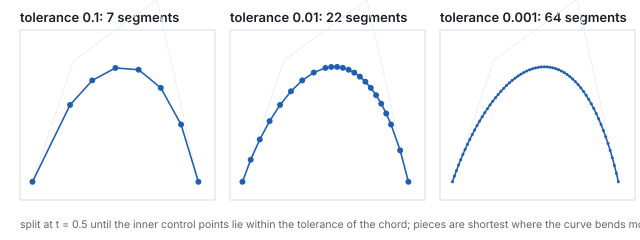
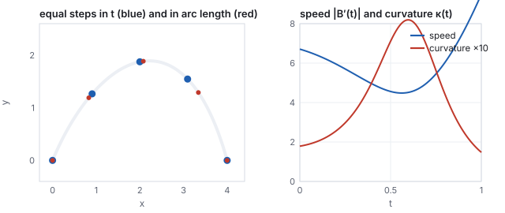
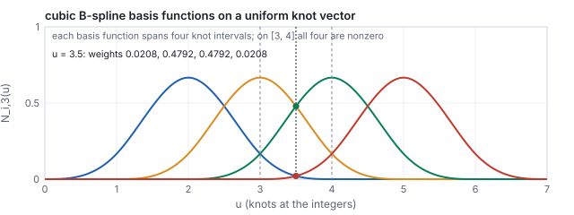
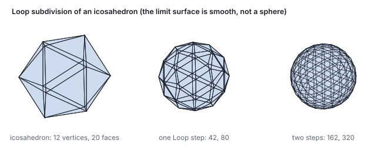
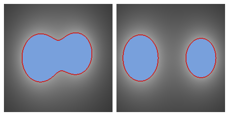

This chapter links to the course’s interactive demos and uses MathJax for its
formulas. Read it through the course website (or download the file and open it in a
browser); a Canvas inline preview will reach neither the demos nor the math.
All chapters.
Curves and Surfaces: Bézier, B-Splines, Subdivision
CSS 551 · Advanced 3D Computer Graphics · course text
Course text · smooth shapes from a few control points: the Bézier curve and de Casteljau’s construction, the matrix form and conversions between bases, rendering by subdivision, arc length and curvature, joining pieces with continuity, B-splines with knot vectors and de Boor’s algorithm, rational curves, corner cutting, the bicubic patch, Catmull–Clark and Loop subdivision, and implicit surfaces. Not tied to a lecture; read it with the meshes chapter and before the animation chapter.
A triangle mesh is a list of flat pieces. A designer does not think in flat pieces; a designer moves a handful of points and expects a smooth shape to follow. This chapter is the mathematics of that expectation. A cubic Bézier curve is four control points blended by four polynomials, and de Casteljau’s construction evaluates it with nothing but repeated midpoints; the chapter works one curve both ways at \(t = 0.5\), reads its tangent off the construction, writes the same curve as a matrix product, and renders it by splitting until the pieces are flat. It measures the curve’s speed, arc length and curvature, since an animator and a tessellator both need them. Longer shapes are pieces joined with a continuity condition, or a B-spline whose control points act locally and whose knot vector is worked with de Boor’s algorithm, or a rational curve that can be an exact circle. The same ideas one dimension up give the bicubic patch of the Utah teapot, and the corner-cutting idea applied to a polygon, a cube and an icosahedron gives subdivision curves and surfaces, with one step of Catmull–Clark and one of Loop worked by hand. A last section gives the other way to define a smooth shape, as the zero set of a field. The meshes that get rendered are still triangles; these are the shapes they approximate.
Definition (parametric curve)
A parametric curve is a function \(\mathbf{c}(t)\) from a parameter interval, usually \([0, 1]\), to
points in the plane or in space. Its derivative \(\mathbf{c}'(t)\) is the tangent (the velocity, if
\(t\) is time). A polynomial curve has polynomial coordinate functions; a cubic has degree 3
in each.
The alternatives are worse for drawing. An explicit form \(y = f(x)\) cannot turn back on itself; an
implicit form \(F(x, y) = 0\) says whether a point is on the curve but not how to walk along it
(Section 12 returns to it, because for surfaces it has its own uses). A
parametric curve is walked by stepping \(t\), which is exactly what a renderer needs to turn it into
line segments and what an animator needs to move an object along it. Polynomials are the choice
because they are cheap to evaluate, closed under the affine transforms of
the affine chapter, and easy to differentiate. Cubics are the
usual degree: the lowest that can bend twice (an S) and that can be joined with matching tangents at
both ends.
2 · Bézier curves and de Casteljau’s construction
Definition (cubic Bézier curve)
For control points \(\mathbf{P}_0, \mathbf{P}_1, \mathbf{P}_2, \mathbf{P}_3\),
\[
\mathbf{B}(t) = (1-t)^3\,\mathbf{P}_0 + 3(1-t)^2 t\,\mathbf{P}_1 + 3(1-t)t^2\,\mathbf{P}_2 + t^3\,\mathbf{P}_3, \qquad t \in [0, 1].
\]
The four weights are the cubic Bernstein polynomials \(B_i(t)\); they are non-negative on
\([0,1]\) and sum to 1 (expand \(((1-t) + t)^3\)), so \(\mathbf{B}(t)\) is a weighted average of the
control points.
The four Bernstein weights. At \(t = 0\) only \(\mathbf{P}_0\) counts, at \(t = 1\) only \(\mathbf{P}_3\); in between the inner points pull without ever being reached.
Four consequences read off the definition. The curve interpolates its ends,
\(\mathbf{B}(0) = \mathbf{P}_0\) and \(\mathbf{B}(1) = \mathbf{P}_3\), and passes through no other
control point in general. Its end tangents are \(\mathbf{B}'(0) = 3(\mathbf{P}_1 - \mathbf{P}_0)\)
and \(\mathbf{B}'(1) = 3(\mathbf{P}_3 - \mathbf{P}_2)\): the curve leaves \(\mathbf{P}_0\) toward
\(\mathbf{P}_1\) and arrives at \(\mathbf{P}_3\) from \(\mathbf{P}_2\), which is why dragging the inner
points feels like bending the ends. Because the weights are a partition of unity, the curve stays in
the convex hull of its control points, and an affine transform of the points transforms the
curve (affine invariance): to move a curve, move its four points. And a straight line crosses
the curve no more often than it crosses the control polygon (variation diminishing): the
curve wiggles less than its polygon.
De Casteljau’s construction
Interpolate each consecutive pair of control points at \(t\), giving three points; interpolate those,
giving two; interpolate those, giving one. The last point is \(\mathbf{B}(t)\), and the last two
points span its tangent: \(\mathbf{B}'(t) = 3\,(\mathbf{Q}_1 - \mathbf{Q}_0)\) where \(\mathbf{Q}_0, \mathbf{Q}_1\)
are the level-two points. Repeated linear interpolation, and nothing else, evaluates the curve.
De Casteljau’s construction at \(t = 0.5\): midpoints of the polygon (orange), midpoints of those (green), and the midpoint of those (red), which lies on the curve with the green segment as its tangent.
Worked example (one curve, two ways)
\(\mathbf{P}_0 = (0, 0)\), \(\mathbf{P}_1 = (1, 2)\), \(\mathbf{P}_2 = (3, 3)\), \(\mathbf{P}_3 = (4, 0)\), at
\(t = 0.5\). By the construction, the level-one points are the polygon’s midpoints
\((0.5, 1)\), \((2, 2.5)\), \((3.5, 1.5)\); level two, their midpoints \((1.25, 1.75)\), \((2.75, 2)\); level
three, \((2, 1.875)\). By the formula, the weights at \(t = 0.5\) are
\((\tfrac18, \tfrac38, \tfrac38, \tfrac18)\), so
\(\mathbf{B}(0.5) = \tfrac18(0,0) + \tfrac38(1,2) + \tfrac38(3,3) + \tfrac18(4,0)
= (\tfrac{3 + 9 + 4}{8}, \tfrac{6 + 9}{8}) = (2, 1.875)\). Same point. The tangent is
\(3\,((2.75, 2) - (1.25, 1.75)) = (4.5, 0.75)\): moving right and slightly up, past the top of the
arch. At \(t = 0.25\) the weights are \((0.4219, 0.4219, 0.1406, 0.0156)\) and the point is
\((0.906, 1.266)\). The end tangents are \(3(\mathbf{P}_1 - \mathbf{P}_0) = (3, 6)\) and
\(3(\mathbf{P}_3 - \mathbf{P}_2) = (3, -9)\).
Hands-on
The construction is five lines of code. Run this from the course folder and compare with the
worked example at \(t = 0.25\):
node -e "
const lerp=(a,b,t)=>a.map((x,i)=>x+(b[i]-x)*t);
let L=[[0,0],[1,2],[3,3],[4,0]]; const t=0.25;
while(L.length>1){L=L.slice(0,-1).map((p,i)=>lerp(p,L[i+1],t));console.log(JSON.stringify(L));}"
Change \(t\) to \(0.5\) and confirm the three levels of the figure.
Print \(3\,(\mathbf{Q}_1 - \mathbf{Q}_0)\) from the second-to-last level at \(t = 0.25\); it should be \((4.125, 3.9375)\), the tangent of Exercise 1.
Replace the four points by five and run again: the loop needs no change, and the result is the quartic Bézier curve of the five points.
The same construction with \(n + 1\) control points and \(n\) levels gives the degree-\(n\) curve;
degree 2 (three points) is common in fonts, degree 3 nearly everywhere else. A curve can also be
raised in degree without changing its shape: the cubic’s five quartic control points are
\(\mathbf{Q}_i = \tfrac{i}{4}\mathbf{P}_{i-1} + (1 - \tfrac{i}{4})\mathbf{P}_i\), which for the curve above
gives \((0,0), (0.75, 1.5), (2, 2.5), (3.25, 2.25), (4, 0)\), a polygon closer to the curve than the
original. Degree elevation is how two pieces of different degree are made compatible before
they are joined or blended.
3 · The matrix form, and changing basis
Any cubic is \(\mathbf{c}(t) = \mathbf{a}t^3 + \mathbf{b}t^2 + \mathbf{c}t + \mathbf{d}\); the Bézier,
Hermite and B-spline forms differ only in what the four vector coefficients are called. Writing the
monomials as a row and the four control quantities as a column, each form is one constant
\(4\times4\) basis matrix.
Two forms with the same power-basis coefficients are the same curve, so converting between them is a
matrix product: \(\mathbf{G}_{\text{new}} = M_{\text{new}}^{-1} M_{\text{old}}\, \mathbf{G}_{\text{old}}\).
Two conversions are used constantly.
Worked example (Bézier to Hermite, and B-spline to Bézier)
For the curve of Section 2, \(M_{\text{B\'ez}}\) gives power coefficients \(x(t) = -2t^3 + 3t^2 + 3t\) and
\(y(t) = -3t^3 - 3t^2 + 6t\); check \(x(0.5) = -0.25 + 0.75 + 1.5 = 2\). Its Hermite form is
\(\mathbf{p}_a = \mathbf{P}_0\), \(\mathbf{p}_b = \mathbf{P}_3\), \(\mathbf{m}_a = 3(\mathbf{P}_1 - \mathbf{P}_0) = (3, 6)\),
\(\mathbf{m}_b = 3(\mathbf{P}_3 - \mathbf{P}_2) = (3, -9)\): the tangents of Section 2, which is what the
first and last rows of \(M_{\text{B\'ez}}\) say. The other direction: the uniform B-spline piece with
control points \(\mathbf{P}_0..\mathbf{P}_3\) is the Bézier curve with control points
\[
\tfrac16(\mathbf{P}_0 + 4\mathbf{P}_1 + \mathbf{P}_2),\quad \tfrac13(2\mathbf{P}_1 + \mathbf{P}_2),\quad \tfrac13(\mathbf{P}_1 + 2\mathbf{P}_2),\quad \tfrac16(\mathbf{P}_1 + 4\mathbf{P}_2 + \mathbf{P}_3),
\]
here \((1.167, 1.833), (1.667, 2.333), (2.333, 2.667), (2.833, 2.333)\). Evaluating that Bézier at
\(t = 0.5\) gives \((2, 2.396)\), and so does the B-spline formula of Section 7. This conversion is how
a B-spline is handed to a renderer that only draws Bézier pieces, which is most of them.
The matrix form is also the fast way to evaluate many points: \(M\mathbf{G}\) is computed once per
piece, and each point costs one dot product with \((t^3, t^2, t, 1)\). GPU tessellation shaders and
font rasterizers do exactly this.
4 · Rendering a curve: subdivision and the flatness test
A curve is drawn as line segments, and the question is how many. Stepping \(t\) uniformly wastes
segments where the curve is straight and starves it where it bends. De Casteljau’s construction
answers better, because it also splits the curve: the points down the left edge of the
triangle in the figure of Section 2 (\(\mathbf{P}_0\), \((0.5, 1)\), \((1.25, 1.75)\), \((2, 1.875)\)) are
the control points of the piece on \([0, 0.5]\), and the right edge gives the piece on \([0.5, 1]\).
Definition (flatness, adaptive subdivision)
A Bézier piece is flat to tolerance \(\varepsilon\) if both inner control points lie within
\(\varepsilon\) of the chord \(\mathbf{P}_0\mathbf{P}_3\); by the convex-hull property the whole curve then
lies within \(\varepsilon\) of the chord. Adaptive subdivision draws a piece as its chord if it is flat,
and otherwise splits it at \(t = 0.5\) and recurses on both halves.

Adaptive subdivision of the Section 2 curve at three tolerances. The segment count grows like \(\varepsilon^{-1/2}\): ten times the accuracy costs about three times the segments.
Worked example (two levels of the recursion)
The whole curve has flatness \(3.0\) (\(\mathbf{P}_2\) is 3 units above the chord \(y = 0\)). Split at
\(t = 0.5\): the left piece \((0,0), (0.5, 1), (1.25, 1.75), (2, 1.875)\) has flatness \(0.422\), the
right piece \((2, 1.875), (2.75, 2), (3.5, 1.5), (4, 0)\) has \(0.752\). Neither is flat to \(0.1\), so
both split again. The recursion ends with 7 segments at tolerance \(0.1\), 22 at \(0.01\), 64 at
\(0.001\). For comparison, 64 uniform steps in \(t\) reach a maximum chord error of \(0.00052\): about
the same as the adaptive result at 64 segments, but only because this curve bends nearly evenly; a
curve with one tight bend and long straight runs would need many times more uniform steps.
The test is in every vector-graphics rasterizer and font engine. In three dimensions the same rule
tessellates a patch (Section 10): split in \(u\) and \(v\) until the sub-patch is flat to a fraction of
a pixel, which is a screen-space tolerance and therefore a level of detail that follows the camera
for free, the point made about the bunny in the meshes chapter.
5 · Speed, arc length, and curvature
The parameter \(t\) is not distance. The tangent \(\mathbf{B}'(t)\) has a length, the speed,
and it varies along the curve; equal steps in \(t\) give unequal steps along the curve, which an
animator moving an object along a path notices at once as unmotivated acceleration.
Definition (arc length, curvature)
The arc length from \(0\) to \(t\) is \(s(t) = \int_0^t |\mathbf{B}'(\tau)|\,d\tau\), which for a polynomial
curve has no closed form and is evaluated numerically (Simpson’s rule on a few hundred samples
is ample). Reparametrizing by arc length means solving \(s(t) = \sigma\) for \(t\), by bisection or
Newton’s method, to place a point at a chosen distance. The curvature of a plane curve is
\[
\kappa(t) = \frac{|x'y'' - y'x''|}{\bigl(x'^2 + y'^2\bigr)^{3/2}},
\]
the reciprocal of the radius of the circle that best fits the curve there.

Equal steps in \(t\) against equal steps in arc length, and the speed and curvature of the Section 2 curve. The speed is lowest where the curvature is highest, as it usually is for a cubic drawn through a bend.
Worked example (length, the midpoint by distance, and the bend)
The speed is \(|(3, 6)| = 6.708\) at \(t = 0\), \(|(4.5, 0.75)| = 4.562\) at \(t = 0.5\), and
\(|(3, -9)| = 9.487\) at \(t = 1\): the curve slows over its top and leaves twice as fast as it
arrived. Its length is \(5.830\), between the chord (\(4\)) and the control polygon (\(7.634\)), as
it must be. The four quarters in \(t\) have lengths \(1.564, 1.270, 1.182, 1.813\), so the point at
\(t = 0.5\) is only \(48.6\,\%\) of the way along; the true midpoint by distance is at \(t = 0.518\),
the point \((2.08, 1.886)\). Curvature is \(0.711\) at \(t = 0.5\) (a fitting circle of radius \(1.41\)),
peaks at \(0.820\) near \(t = 0.60\), and is only \(0.179\) at the start. A car following this path
at constant speed would feel the tightest turn just past the top.
The animation chapter uses exactly this: a keyframed path is
reparametrized by arc length so that easing controls the speed and the spline controls only the
shape. Curvature is what a designer’s “fair curve” means, a curvature that varies
smoothly, and the curvature comb (normals scaled by \(\kappa\)) is the tool CAD systems draw to show it.
6 · Joining pieces: continuity
One cubic cannot do much. Long shapes are chains of cubic pieces, and what matters is how each piece
meets the next. Two pieces are \(C^0\) if they share the endpoint; \(C^1\) if their tangent
vectors match there (same direction and same length, so a point moving along them at
constant \(t\) has continuous velocity); \(G^1\) if only the tangent directions match (the
shape is smooth, the speed may jump); \(C^2\) if the second derivatives match too, which is what a
highlight sliding across a car body needs in order not to kink, and \(G^2\) if the curvature of
Section 5 is continuous, which is what the eye reads as a fair curve.
The same first piece and three second pieces. The join is a corner, tangent-continuous in direction only, or tangent-continuous in the full vector, according to where \(\mathbf{Q}_1\) sits relative to \(\mathbf{P}_2\) and \(\mathbf{P}_3\).
Worked example (placing the fourth point)
The first piece ends at \(\mathbf{P}_3 = (4, 0)\) with tangent \(3(\mathbf{P}_3 - \mathbf{P}_2) = (3, -9)\).
A second piece \(\mathbf{Q}_0\mathbf{Q}_1\mathbf{Q}_2\mathbf{Q}_3\) with \(\mathbf{Q}_0 = \mathbf{P}_3\) starts
with tangent \(3(\mathbf{Q}_1 - \mathbf{Q}_0)\). For \(C^1\), \(\mathbf{Q}_1 - \mathbf{P}_3 = \mathbf{P}_3 - \mathbf{P}_2\),
so \(\mathbf{Q}_1 = (5, -3)\): the two inner points mirror through the join. For \(G^1\) any point on
that ray works, for instance \(\mathbf{Q}_1 = (4.5, -1.5)\), whose tangent \((1.5, -4.5)\) is half as long
in the same direction. \(\mathbf{Q}_1 = (5, 1)\) gives tangent \((3, 3)\), a corner. Drawing tools show the
mirror rule as the two handles of a point that move together.
Chains are usually specified differently. A Hermite piece is given by its two endpoints and
the two tangent vectors there, the \(M_{\text{Herm}}\) form of Section 3,
\[
\mathbf{h}(s) = (2s^3 - 3s^2 + 1)\,\mathbf{p}_a + (s^3 - 2s^2 + s)\,\mathbf{m}_a + (-2s^3 + 3s^2)\,\mathbf{p}_b + (s^3 - s^2)\,\mathbf{m}_b,
\]
which is the Bézier piece with \(\mathbf{P}_1 = \mathbf{p}_a + \mathbf{m}_a/3\) and
\(\mathbf{P}_2 = \mathbf{p}_b - \mathbf{m}_b/3\). A Catmull–Rom spline through points
\(\mathbf{p}_0, \mathbf{p}_1, \ldots\) is a chain of Hermite pieces with the tangent at each point set
to half the chord between its neighbors, \(\mathbf{m}_i = \tfrac12(\mathbf{p}_{i+1} - \mathbf{p}_{i-1})\):
\(C^1\) by construction and passing through every point, which is what an animator wants of a path
through keyframes. The animation chapter works the keyframe
demo’s spline this way. A Catmull–Rom spline is not \(C^2\); the B-spline of the next
section is, at the price of not passing through its points.
Pitfall (a \(C^1\) join that is not \(G^2\))
Matching tangent vectors does not match curvature. The \(C^1\) case above joins a piece whose
curvature at \(t = 1\) is \(0.148\) (from the Section 5 formula on the first piece) to one whose
curvature at its start is different unless \(\mathbf{Q}_2\) is also constrained, so a highlight on the
surface swept from this curve would show a visible seam at the join even though the outline is
smooth. Car-body and lens design require \(G^2\) or better; a chain of Catmull–Rom pieces cannot
deliver it, and a single B-spline can.
7 · B-splines, knot vectors, and de Boor’s algorithm
A Bézier chain has a defect for design: moving one control point changes the whole piece, and
\(C^2\) joins impose constraints the designer must maintain by hand. The B-spline trades
interpolation for both. Its pieces use the same four-point blend with a different basis, and every
control point influences exactly four consecutive pieces.
Definition (uniform cubic B-spline piece)
For consecutive control points \(\mathbf{P}_0, \ldots, \mathbf{P}_3\) and \(u \in [0,1]\),
\[
\mathbf{S}(u) = \tfrac16\Bigl[(1-u)^3\,\mathbf{P}_0 + (3u^3 - 6u^2 + 4)\,\mathbf{P}_1 + (-3u^3 + 3u^2 + 3u + 1)\,\mathbf{P}_2 + u^3\,\mathbf{P}_3\Bigr],
\]
the \(M_{\text{Bsp}}\) form of Section 3. The next piece uses \(\mathbf{P}_1, \ldots, \mathbf{P}_4\), and
consecutive pieces meet with \(C^2\) continuity automatically. The weights are again non-negative and
sum to 1.
Worked example (the same polygon as a B-spline)
With the four points of Section 2, at \(u = 0\) the weights are \((\tfrac16, \tfrac46, \tfrac16, 0)\), so
\(\mathbf{S}(0) = \tfrac16\bigl[(0,0) + 4(1,2) + (3,3)\bigr] = (\tfrac76, \tfrac{11}6) = (1.167, 1.833)\),
and at \(u = 1\), \(\mathbf{S}(1) = \tfrac16\bigl[(1,2) + 4(3,3) + (4,0)\bigr] = (2.833, 2.333)\). The piece
runs from a point near \(\mathbf{P}_1\) to a point near \(\mathbf{P}_2\) and never touches the polygon.
At \(u = 0.5\) the weights are \((0.0208, 0.4792, 0.4792, 0.0208)\), almost entirely on the two middle
points, and \(\mathbf{S}(0.5) = (2, 2.396)\), higher than the Bézier curve’s \((2, 1.875)\)
because it hugs \(\mathbf{P}_1\) and \(\mathbf{P}_2\).
Left: Bézier and B-spline pieces on one polygon. Right: the rational quadratic of Section 8, an exact quarter circle.
The general B-spline is defined over a knot vector \(u_0 \le u_1 \le \cdots\), a
nondecreasing list of parameter values at which the pieces meet. The basis functions come from the
Cox–de Boor recursion, each one a bump spanning four knot intervals, and the curve on any interval
is the blend of the four control points whose bumps cover it.
Definition (B-spline basis functions)
\[
N_{i,0}(u) = \begin{cases} 1 & u_i \le u < u_{i+1} \\ 0 & \text{otherwise,} \end{cases} \qquad
N_{i,k}(u) = \frac{u - u_i}{u_{i+k} - u_i}\,N_{i,k-1}(u) + \frac{u_{i+k+1} - u}{u_{i+k+1} - u_{i+1}}\,N_{i+1,k-1}(u),
\]
with any term whose denominator is zero taken as zero. The cubic curve is
\(\mathbf{S}(u) = \sum_i N_{i,3}(u)\,\mathbf{P}_i\). Repeating a knot reduces the continuity there by one
order per repetition; four equal knots at each end (a clamped vector) make the curve start
and end at its first and last control points, and \([0,0,0,0,1,1,1,1]\) makes it a Bézier curve.

The four cubic basis functions of the uniform knot vector \([0, 1, \ldots, 7]\). On the span \([3, 4]\) all four are nonzero and sum to 1; at \(u = 3.5\) their values are the Section 7 weights at \(u = 0.5\).
De Boor’s algorithm
De Casteljau’s construction generalized to a knot vector. To evaluate at \(u\) in the span
\([u_i, u_{i+1})\), start from the four control points \(\mathbf{P}_{i-3}, \ldots, \mathbf{P}_i\) and, for
\(r = 1, 2, 3\), replace each consecutive pair by the interpolation
\[
\mathbf{d}_j^{(r)} = (1 - \alpha)\,\mathbf{d}_{j-1}^{(r-1)} + \alpha\,\mathbf{d}_j^{(r-1)}, \qquad \alpha = \frac{u - u_j}{u_{j+4-r} - u_j},
\]
so the interpolation weights are ratios of knot differences instead of the constant \(t\). The last
point is \(\mathbf{S}(u)\). Evaluating a B-spline never requires the basis functions explicitly.
Worked example (de Boor on one span)
Knots \([0, 1, 2, 3, 4, 5, 6, 7]\), control points \(\mathbf{P}_0..\mathbf{P}_3\) of Section 2, \(u = 3.5\) in
the span \([3, 4]\). Level 1, with \(\alpha = (u - u_j)/(u_{j+3} - u_j)\) for \(j = 1, 2, 3\):
\(\alpha = 0.8333, 0.5, 0.1667\), giving \((0.833, 1.667)\), \((2, 2.5)\), \((3.167, 2.5)\). Level 2, with
\(\alpha = (u - u_j)/(u_{j+2} - u_j)\) for \(j = 2, 3\): \(\alpha = 0.75, 0.25\), giving \((1.708, 2.292)\),
\((2.292, 2.5)\). Level 3, \(\alpha = (u - u_3)/(u_4 - u_3) = 0.5\): \((2, 2.396)\), the same point as the
uniform formula at \(u = 0.5\), as it must be. On the clamped vector \([0,0,0,0,1,1,1,1]\) the basis
functions at \(u = 0.5\) evaluate to \((0.125, 0.375, 0.375, 0.125)\), the Bernstein weights: the
Bézier curve is the B-spline with all its knots at the ends.
Locality is the design consequence: a control point moves only the four pieces whose basis functions
overlap its own, and a designer sculpts one part of a hull without disturbing the rest. Knots add a
second kind of control: a repeated knot puts a corner into an otherwise smooth curve without splitting
it into separate objects. Non-uniform knot spacing is what the N in NURBS stands for.
8 · Rational curves and NURBS
Polynomial pieces cannot represent a circle exactly: no polynomial parametrization traces a circle.
The fix is to divide. Give each control point a weight \(w_i\), evaluate the polynomial curve on the
weighted points in one dimension up, and divide by the polynomial of the weights:
\[
\mathbf{r}(t) = \frac{\sum_i B_i(t)\, w_i\, \mathbf{C}_i}{\sum_i B_i(t)\, w_i}.
\]
The weight is a fourth homogeneous coordinate and the division is the projective divide of
the affine chapter, which is why a rational curve is
exactly a polynomial curve in homogeneous space projected down, and why a perspective projection of a
rational curve is another rational curve (the projection is a linear map of the homogeneous points).
With a knot vector as well, this is a NURBS curve, non-uniform rational B-spline, the
representation of every CAD system and of the glTF and STEP file formats’ curves.
Worked example (a circle from three points and a weight)
Control points \(\mathbf{C}_0 = (1, 0)\), \(\mathbf{C}_1 = (1, 1)\), \(\mathbf{C}_2 = (0, 1)\), quadratic weights
\((1-t)^2, 2(1-t)t, t^2\), and point weights \(w = (1, \tfrac{\sqrt2}{2}, 1)\).
At \(t = 0.5\): the basis is \((0.25, 0.5, 0.25)\); the numerator is
\(0.25(1,0) + 0.5\cdot0.7071(1,1) + 0.25(0,1) = (0.6036, 0.6036)\); the denominator is
\(0.25 + 0.3536 + 0.25 = 0.8536\); the point is \((0.7071, 0.7071)\), at distance exactly 1 from the
origin. At \(t = 0.25\) the point is \((0.930, 0.368)\), also at distance 1. Without the weight, the
midpoint is \((0.75, 0.75)\), at distance 1.06: a parabola. In general a conic arc of half-angle
\(\theta\) needs the middle weight \(\cos\theta\); a full circle is four such arcs with a double knot
between them, or three arcs of \(120^\circ\) with weight \(\tfrac12\).
Raising a weight pulls the curve toward that control point without moving the point, a second
handle on the shape; \(w_i \to \infty\) drags the curve through \(\mathbf{C}_i\), \(w_i = 0\) removes
it. The price of rationality is that the curve’s parametrization is no longer polynomial, so
the speed and arc length of Section 5 must be computed on the divided form, and that degree
elevation and subdivision act on the homogeneous points.
9 · Corner cutting: subdivision curves
There is a third way to get a smooth curve from a polygon, and it needs no basis functions at all.
Chaikin’s algorithm (1974) replaces every edge of the polygon by its points at one quarter and
three quarters, discarding the old vertices. Each step doubles the point count and cuts every corner;
the limit is a smooth curve. It is, in fact, exactly the uniform quadratic B-spline of the original
polygon, and the subdivision rule is what the B-spline’s refinement property looks like when
written as geometry.
Chaikin’s corner cutting on a four-point polygon. After four steps the polyline is indistinguishable from its limit curve at this scale.
Worked example (one step)
Polygon \((0,0), (1,3), (3,3), (4,0)\), ends kept. The edge from \((0,0)\) to \((1,3)\) contributes
\((0.25, 0.75)\) and \((0.75, 2.25)\); the top edge contributes \((1.5, 3)\) and \((2.5, 3)\); the last
edge \((3.25, 2.25)\) and \((3.75, 0.75)\). Eight points after one step, sixteen after two, sixty-four
after four. The limit curve passes through the midpoint \((0.5, 1.5)\) of the first edge, as a uniform
quadratic B-spline passes through the midpoints of its control polygon.
The cubic B-spline has a corner-cutting rule too (the Lane–Riesenfeld algorithm: double every
vertex, then take midpoints twice), and Section 4’s de Casteljau split is the same idea for
a single Bézier piece. Subdivision is the mechanism that scales to surfaces in Section 11.
10 · Surfaces: the bicubic patch
Definition (bicubic Bézier patch)
For a \(4\times4\) net of control points \(\mathbf{P}_{ij}\),
\[
\mathbf{S}(u, v) = \sum_{i=0}^{3}\sum_{j=0}^{3} B_i(u)\,B_j(v)\,\mathbf{P}_{ij}, \qquad (u, v) \in [0,1]^2,
\]
a tensor product: a Bézier curve in \(u\) whose four control points are themselves
Bézier curves in \(v\). The partial derivatives \(\mathbf{S}_u\) and \(\mathbf{S}_v\) are the
tangents; their cross product is the normal.
A bicubic patch. The surface interpolates the four corners of the net and is pulled toward, never onto, the twelve other points.
Worked example (the center of a patch)
Control points \(\mathbf{P}_{ij} = (i, h_{ij}, j)\) on a unit grid, with the four inner heights 1.5 and
the twelve outer heights 0. At \((u, v) = (0.5, 0.5)\) every Bernstein weight is \(\tfrac18\) or
\(\tfrac38\), and the height is
\(\sum_{ij} B_i B_j h_{ij} = 4\cdot\tfrac38\cdot\tfrac38\cdot1.5 = 0.844\): the center point is
\((1.5, 0.844, 1.5)\), just over half the height of the inner net. The tangents there are
\(\mathbf{S}_u = (3, 0, 0)\) and \(\mathbf{S}_v = (0, 0, 3)\) (by the symmetry of the heights), so the normal
is straight up. At \((0.25, 0.5)\) the point is \((0.75, 0.633, 1.5)\), \(\mathbf{S}_u = (3, 1.687, 0)\),
and the unit normal \(\mathbf{S}_v\times\mathbf{S}_u / |\cdot| = (-0.49, 0.872, 0)\), leaning back toward
the lower edge as the slope says it should.
The Utah teapot, the course’s test model since the
Utah era, is 32 of these patches; a renderer tessellates each into a grid of triangles by
evaluating \(\mathbf{S}\) on a lattice of \((u, v)\), exactly the sweep-and-index construction of
the meshes chapter, and computes normals from the tangents rather than
from the triangles. The flatness test of Section 4 applied in both directions decides how fine the
lattice must be, and a GPU tessellation stage does exactly this with the tolerance set in pixels.
Everything else in this chapter has a surface version by the same tensor-product step: a
B-spline surface, a NURBS surface (a sphere is exact, as the circle was), a Hermite patch with
sixteen quantities including four twist vectors at the corners.
Joining patches with continuity is harder than joining curves: \(C^1\) across an edge constrains
two rows of control points, and around a vertex where other than four patches meet it cannot be
done in general. That difficulty is what the next section removes.
11 · Subdivision surfaces: Catmull–Clark and Loop
Chaikin’s idea in two dimensions: start from any polygon mesh, insert points and reconnect by a
fixed rule, repeat, and the limit is a smooth surface. Catmull and Clark’s rule (1978) works on
meshes of arbitrary faces and produces quads; Loop’s rule (1987) works on triangles. Both give a
surface that is \(C^2\) almost everywhere and \(C^1\) at the extraordinary vertices where the
valence is not the regular one (four for quads, six for triangles), and neither needs the designer
to manage continuity: a coarse control cage is the whole specification.
Definition (one Catmull–Clark step)
For each face, a face point: the average of its vertices. For each edge, an edge
point: the average of its two endpoints and the two adjacent face points. For each old vertex
\(\mathbf{V}\) of valence \(n\), with \(\mathbf{F}\) the average of the adjacent face points and
\(\mathbf{R}\) the average of the midpoints of the adjacent edges, the new vertex point
\[
\mathbf{V}' = \frac{\mathbf{F} + 2\mathbf{R} + (n - 3)\,\mathbf{V}}{n}.
\]
Each old face with \(k\) sides becomes \(k\) quads, each joining a vertex point, two edge points and
the face point.
A cube under Catmull–Clark subdivision. The eight corners of the cage are extraordinary vertices of valence 3; everything inserted later has valence 4.
Worked example (the cube’s corner)
The cube with vertices at \((\pm1, \pm1, \pm1)\). Every face point is a face center, for the top face
\((0, 1, 0)\). The edge from \((1, 1, 1)\) to \((1, 1, -1)\) has endpoints averaging to \((1, 1, 0)\) and
adjacent face points \((1, 0, 0)\) and \((0, 1, 0)\), so its edge point is
\(\tfrac14\bigl[(1,1,1) + (1,1,-1) + (1,0,0) + (0,1,0)\bigr] = (0.75, 0.75, 0)\). The corner
\(\mathbf{V} = (1, 1, 1)\) has valence \(n = 3\); its three face points average to
\(\mathbf{F} = (\tfrac13, \tfrac13, \tfrac13)\) and its three edge midpoints \((1,1,0), (1,0,1), (0,1,1)\)
average to \(\mathbf{R} = (\tfrac23, \tfrac23, \tfrac23)\); with \(n - 3 = 0\) the old position drops out and
\(\mathbf{V}' = \tfrac13(\mathbf{F} + 2\mathbf{R}) = (\tfrac59, \tfrac59, \tfrac59) = (0.556, 0.556, 0.556)\).
The corner pulls in by almost half. Counts: 6 face points, 12 edge points and 8 vertex points make
26 vertices; each of the 6 faces yields 4 quads, 24 faces; 48 edges. A second step gives 98 vertices
and 96 faces, a third 386 and 384: four times the faces per step, as for any quad mesh.
Definition (one Loop step)
On a triangle mesh. For each edge with endpoints \(\mathbf{a}, \mathbf{b}\) and opposite vertices
\(\mathbf{c}, \mathbf{d}\) in its two triangles, an edge point
\(\tfrac38(\mathbf{a} + \mathbf{b}) + \tfrac18(\mathbf{c} + \mathbf{d})\). For each old vertex \(\mathbf{V}\) of
valence \(n\) with neighbors \(\mathbf{N}_j\), a vertex point
\[
\mathbf{V}' = (1 - n\beta)\,\mathbf{V} + \beta\sum_j \mathbf{N}_j, \qquad \beta = \frac1n\Bigl(\tfrac58 - \bigl(\tfrac38 + \tfrac14\cos\tfrac{2\pi}{n}\bigr)^2\Bigr),
\]
which is \(\beta = \tfrac1{16}\) for the regular valence 6 and \(0.0841\) for valence 5. Each triangle
becomes four: three at the corners and one in the middle joining the three edge points.

Loop subdivision of an icosahedron. Unlike the icosphere of the meshes chapter, nothing is projected to a sphere; the surface shrinks toward its smooth limit, which is round to within about 1 %.
Worked example (one icosahedron vertex and one edge)
The unit icosahedron’s vertex \(\mathbf{V} = (-0.526, 0.851, 0)\) has valence 5, so
\(\beta = \tfrac15\bigl(\tfrac58 - (\tfrac38 + \tfrac14\cos72^\circ)^2\bigr) = 0.0841\) and
\(1 - 5\beta = 0.580\). Its five neighbors sum to \((-1.176, 1.902, 0)\), so
\(\mathbf{V}' = 0.580\,\mathbf{V} + 0.0841\,(-1.176, 1.902, 0) = (-0.404, 0.653, 0)\), at radius \(0.768\):
the sharp corner moves a quarter of the way toward the center. The edge from \(\mathbf{V}\) to
\((-0.851, 0, 0.526)\) has opposite vertices \((0, 0.526, 0.851)\) and \((-0.851, 0, -0.526)\), and its
edge point \(\tfrac38(\mathbf{a} + \mathbf{b}) + \tfrac18(\mathbf{c} + \mathbf{d}) = (-0.623, 0.385, 0.238)\), at
radius \(0.769\). After one step the 42 vertices lie at radii between \(0.768\) and \(0.769\); after
three steps, between \(0.704\) and \(0.710\): a smooth surface with the icosahedron’s
twelve-fold bumps almost gone, but not a sphere and not at radius 1. Counts: \(12, 20 \to 42, 80 \to
162, 320 \to 642, 1280\).
The limit surfaces are not spheres, but they are smooth blobs, and adding cage vertices near a
corner sharpens it; tagging an edge as a crease modifies the rule along it to keep a sharp fold.
Film characters have been Catmull–Clark cages since Pixar’s Geri’s Game (1997),
every modeling tool has the button, and a renderer tessellates the cage to the pixel-appropriate
depth with the counts above, a level-of-detail scheme for free. Loop is the choice when the input is
already triangles, as scanned meshes are. The limit position of a vertex, where it ends up
after infinitely many steps, has a closed form (a fixed weighted average of its one-ring), so the
limit surface can be evaluated and its normal computed without subdividing at all, which is how
the smooth surface is drawn exactly on the GPU. The output is, once more, triangles.
12 · Implicit surfaces and metaballs
Definition (implicit surface)
The set of points where a scalar field equals a threshold, \(\{\mathbf{x} : F(\mathbf{x}) = T\}\). The
gradient \(\nabla F\) is normal to the surface. A metaball field is a sum of bumps around
centers, \(F(\mathbf{x}) = \sum_i r_i^2 / |\mathbf{x} - \mathbf{c}_i|^2\) (Blinn, 1982, used a Gaussian);
one ball alone gives a sphere of radius \(r_i\) at \(T = 1\), and two nearby balls blend into one
smooth shape because their fields add.

A metaball field in the plane, the region above the threshold in blue and the contour in red. Left: centers \(1.1\) apart, one blob with a waist. Right: centers \(1.8\) apart, two separate shapes. The transition is automatic; no one modeled the waist.
Worked example (inside or out)
Balls of radius \(0.5\) at \((-0.55, 0)\) and \(0.42\) at \((0.55, 0.1)\), threshold \(1\). At
\((0, 0.05)\), between them, \(F = 0.25/0.305 + 0.176/0.305 = 1.398\): inside, the waist of the blob,
though the point is outside both spheres taken alone. At \((0, 0.5)\), \(F = 0.834\): outside. At
\((-1.2, 0)\), \(F = 0.649\): outside, so the blob does not extend a full radius past the first center
on the far side, because the second ball adds less there. With the centers \(1.8\) apart the field at
the midpoint is \(0.526\): below threshold, and the shapes separate.
Implicit surfaces are the natural representation for anything that merges and splits (liquids,
organic blobs), for constructive solid geometry (union is \(\max\), intersection \(\min\)), and for
the signed-distance fields that the sculpting tools and the learned representations of
the learned-scenes chapter use. Their cost is that nothing
walks along them: to render one, either march rays until \(F\) crosses \(T\) (the ray tracer’s
approach, cheap when \(F\) is a distance) or convert to triangles with marching cubes
(Lorensen and Cline, 1987), which samples \(F\) on a grid, classifies each cell’s eight corners
as in or out, and emits the triangles of one of 15 cases (256 with symmetries) with vertices placed
on the cell edges by linear interpolation of \(F\). The red contour in the figure is the
two-dimensional version of exactly that test. The result is a mesh, and everything in
the meshes chapter applies to it.
Papers
P. de Casteljau, Courbes et surfaces à pôles, Citroën technical report, 1963.
P. Bézier, “Définition numérique des courbes et surfaces,” Automatisme 11,
1966. C. de Boor, “On Calculating with B-splines,” Journal of Approximation Theory 6, 1972.
G. Chaikin, “An Algorithm for High-Speed Curve Generation,” Computer Graphics and Image
Processing 3(4), 1974. E. Catmull and J. Clark, “Recursively Generated B-Spline Surfaces on
Arbitrary Topological Meshes,” Computer-Aided Design 10(6), 1978. J. Blinn, “A Generalization
of Algebraic Surface Drawing,” ACM Transactions on Graphics 1(3), 1982. C. Loop, Smooth
Subdivision Surfaces Based on Triangles, master’s thesis, University of Utah, 1987. W. Lorensen
and H. Cline, “Marching Cubes,” SIGGRAPH 1987. L. Piegl and W. Tiller, The NURBS Book,
2nd ed., Springer, 1997. T. DeRose, M. Kass and T. Truong, “Subdivision Surfaces in Character
Animation,” SIGGRAPH 1998.
13 · Exercises
Exercise 1 (de Casteljau)
Evaluate the curve of Section 2 at \(t = 0.25\) by the construction and check against the Bernstein result \((0.906, 1.266)\).
Solution
Level one: \((0.25, 0.5)\), \((1.5, 2.25)\), \((3.25, 2.25)\). Level two: \((0.5625, 0.9375)\), \((1.9375, 2.25)\). Level three: \((0.90625, 1.265625)\). Tangent \(3\,(1.375, 1.3125) = (4.125, 3.9375)\), steeply upward, as the curve is still climbing.
Exercise 2 (convex hull)
Can the curve of Section 2 rise above \(y = 3\)? Can it reach \(y = 3\)?
Solution
No and no: the curve lies in the convex hull of its control points, whose top is \(y = 3\) at \(\mathbf{P}_2\) alone, and a weighted average with positive weight on any lower point is strictly below 3. Its maximum is \(y = 1.893\) at \(t = 0.549\) (\(y(t) = 6(1-t)^2t + 9(1-t)t^2 = 6t - 3t^2 - 3t^3\), whose derivative vanishes at \(9t^2 + 6t - 6 = 0\)).
Exercise 3 (Hermite to Bézier)
A Hermite piece from \(\mathbf{p}_a = (0, 0)\) with \(\mathbf{m}_a = (3, 6)\) to \(\mathbf{p}_b = (4, 0)\) with \(\mathbf{m}_b = (3, -9)\). What are its Bézier control points?
Solution
\(\mathbf{P}_1 = \mathbf{p}_a + \mathbf{m}_a/3 = (1, 2)\), \(\mathbf{P}_2 = \mathbf{p}_b - \mathbf{m}_b/3 = (3, 3)\): the curve of Section 2. Hermite and Bézier are two parametrizations of the same cubic, and \(M_{\text{B\'ez}}^{-1} M_{\text{Herm}}\) is the matrix that converts them.
Exercise 4 (the matrix form, by code)
Compute \(M_{\text{B\'ez}}\mathbf{G}\) for the Section 2 curve in a few lines of JavaScript and evaluate \((t^3, t^2, t, 1)\cdot(M\mathbf{G})\) at \(t = 0.5\).
Solution
prints the coefficients \([[-2,-3],[3,-3],[3,6],[0,0]]\) (the columns \(x: -2t^3 + 3t^2 + 3t\), \(y: -3t^3 - 3t^2 + 6t\)) and the point \([2, 1.875]\).
Exercise 5 (flatness)
For the left half-piece of Section 4, \((0,0), (0.5, 1), (1.25, 1.75), (2, 1.875)\), compute the flatness by hand and decide whether it passes a tolerance of \(0.5\).
Solution
The chord runs from \((0,0)\) to \((2, 1.875)\), direction \((2, 1.875)\), length \(2.742\). The distance of \((0.5, 1)\) from the chord is \(|2\cdot1 - 1.875\cdot0.5|/2.742 = 0.388\); of \((1.25, 1.75)\), \(|2\cdot1.75 - 1.875\cdot1.25|/2.742 = 0.422\). Flatness \(0.422 < 0.5\): the piece is drawn as one segment at that tolerance, with a maximum error at most \(0.422\).
Exercise 6 (arc length)
Using the quarter lengths of Section 5, at what \(t\) (to the nearest quarter) is a point \(3\) units along the curve? How far off is the naive guess \(t = 3/5.83 = 0.51\)?
Solution
The quarters accumulate to \(1.564, 2.834, 4.016, 5.830\): 3 units is passed in the third quarter, so \(t\) is between \(0.5\) and \(0.75\), about \(0.5 + 0.25\,(3 - 2.834)/1.182 = 0.535\). The naive guess \(0.51\) lands at about \(2.88\) units, \(0.12\) short, because the curve is slowest there.
Exercise 7 (B-spline locality)
A uniform cubic B-spline has 10 control points. How many pieces does it have, and which pieces move when \(\mathbf{P}_4\) moves?
Solution
Seven pieces (\(\mathbf{P}_0..\mathbf{P}_3\) through \(\mathbf{P}_6..\mathbf{P}_9\)). \(\mathbf{P}_4\) appears in the pieces starting at \(\mathbf{P}_1, \mathbf{P}_2, \mathbf{P}_3, \mathbf{P}_4\): four pieces, and the other three are untouched.
Exercise 8 (de Boor)
On the knot vector \([0, 1, 2, 3, 4, 5, 6, 7]\) with the Section 2 control points, evaluate the curve at \(u = 3.25\).
Solution
Level 1: \(\alpha = (3.25 - 1)/3 = 0.75\), \((3.25 - 2)/3 = 0.4167\), \((3.25 - 3)/3 = 0.0833\): \((0.75, 1.5)\), \((1.833, 2.417)\), \((3.083, 2.75)\). Level 2: \(\alpha = (3.25 - 2)/2 = 0.625\), \((3.25 - 3)/2 = 0.125\): \((1.427, 2.073)\), \((1.990, 2.458)\). Level 3: \(\alpha = 0.25\): \((1.568, 2.170)\). Check with the uniform formula at \(u = 0.25\): weights \((0.0703, 0.6120, 0.3151, 0.0026)\) give the same point.
Exercise 9 (Chaikin)
Run one Chaikin step on the closed square \((0,0), (2,0), (2,2), (0,2)\). How many points, and what shape is the limit?
Solution
Eight points, the 1/4 and 3/4 points of each of the four edges: \((0.5, 0), (1.5, 0), (2, 0.5), (2, 1.5), (1.5, 2), (0.5, 2), (0, 1.5), (0, 0.5)\), an octagon. The limit is a rounded square, the closed uniform quadratic B-spline of the four corners; it is not a circle (its curvature is not constant).
Exercise 10 (Loop, and the demo)
In the meshes chapter’s LOD demo, the icosphere levels are the icosahedron subdivided and projected to the sphere. Predict the vertex counts of levels 0 to 3 from Section 11, then open the demo, select ico, and read them off. Why does the projected version stay at radius 1 while Loop’s does not?
Solution
\(12, 42, 162, 642\) vertices and \(20, 80, 320, 1280\) triangles; the demo’s counts agree, because midpoint subdivision and Loop insert the same vertices and only place them differently. Projection normalizes every new point to unit length, so the mesh interpolates the sphere; Loop’s weights average positions inward and never renormalize, so its surface is the smooth limit of the cage, which for a convex cage lies inside it.